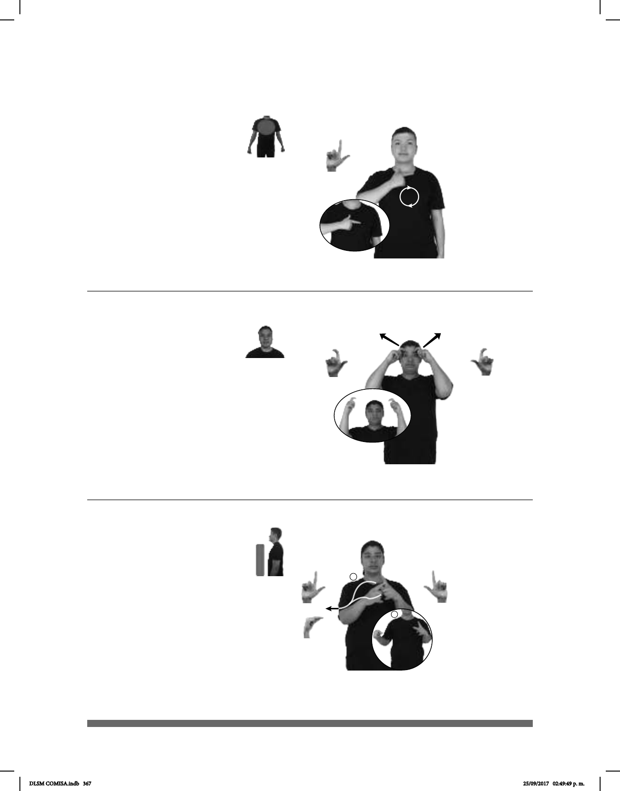

367
(L-81)
Seña: SM
L.1
Palma hacia adentro.
Sobre el pecho.
La mano se mueve
formando círculos.
Se esboza
una sonrisa.
v. intr. Agradar, parecer
bien.
Seña: SB
MD seña que pasa de
MD palma hacia la
izquierda, MB palma hacia la derecha.
MD del pecho al hombro
del centro al lado derecho. MB a la
altura del pecho.
La MD sigue una
trayectoria ondulada.
sust. f. Cada una de las
láminas, generalmente verdes, planas y
delgadas, de que se visten los vegetales,
unidas al tallo o a las ramas.
Seña: SS
L.7
Palmas oblicuas hacia el
centro y hacia abajo.
Inicia sobre la frente y termina a
la altura de la frente.
Las manos parten de un mis-
mo punto y luego se abren hacia los lados.
Ojos inusualmente
abiertos, labios soplando.
1. adj. Que está cansado o
molesto de hacer siempre la misma cosa o de
sufrir siempre lo mismo. 2. v. tr. Fastidiar,
enfadar o colmar la paciencia a alguien.
1
2
(L-80)
(L-79)
PASTEL pro-YO GUSTAR
Me gustó el pastel.
MUCHO TRABAJO pro-YO YA HARTAR
Ya estoy harto de tanto trabajo.
___muy
ÁRBOL
izquierda
TENER HOJAS GRANDE
El árbol tiene hojas muy grandes.
DLSM COMISA.indb 367 25/09/2017 02:49:49 p. m.